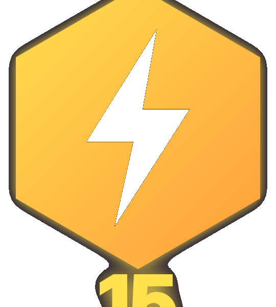

TEKNOLOJİCİ
15
GÜNÜN HABERİ
2026 · İSTİHBARAT VE GÜVENLİK
AÇIK TARAFTAN
GİRDİLER
osint-analiz / terminal
> baglanti: ACIK KAYNAK AGI
> yetki: ERISIM SAGLANDI
> sorgu kayitlari: OKUNUYOR
> gizli ag: ERISIM YOK
> etkilenen kurum: 3
AÇIK KAYNAK
GİZLİ AĞ
3
GİZLİ DEĞİL!
Sorgularını gören, önceliklerini öğreniyor 🔎